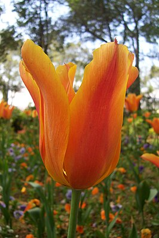

Тюльпаны Фостера
Латинский специфический эпитет fosteriana относится к Майклу Фостеру, британскому специалисту по ирисам.
Вид был впервые описан в 1906 году Уолтером Ирвингом, британским ботаником (1867—1934).
В 2013 году филогенетические связи в роде с использованием последовательностей ДНК были использованы для определения таксономии и классификации. В результате T. fosteriana был помещёна в подрод Tulipa со следующими характеристиками: чешуйка луковицы густо покрыта внутри рябыми или шелковистыми волосками или (почти) голая. Тычинки без волосков или голые. Рыльца сидячие.
Вид легко натурализуется и может выращиваться в саду. Хорошо подходят для миксбордеров и могут использоваться в клумбах. Растут в любой садовой почве, но предпочитают солнечные участки. Можно размножать вегетативно или семенами.
Хорошо известный вид, который послужил родоначальником для многих сортов. Различные сорта могут отличаться друг от друга по высоте, но все они имеют одиночные, чашевидные цветы шириной 12 см, со стройными и иногда полосатыми листьями. Сорт 'Juan' получил награду Королевского садоводческого общества. Имеет красно-оранжевые цветы с жёлтой сердцевиной и пёстрые листья. Тюльпан 'Zombie' — ещё один сорт 'fosteriana' с крупными цветами и сизыми листьями. Другой известный сорт — 'Red Emperor'.